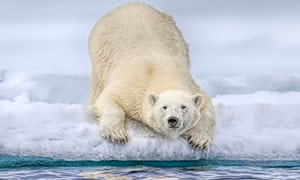
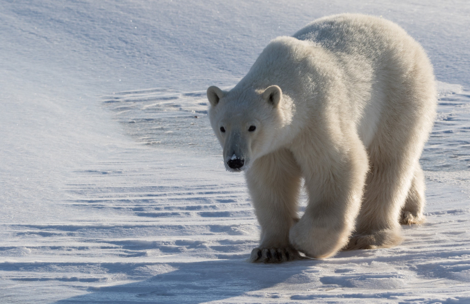
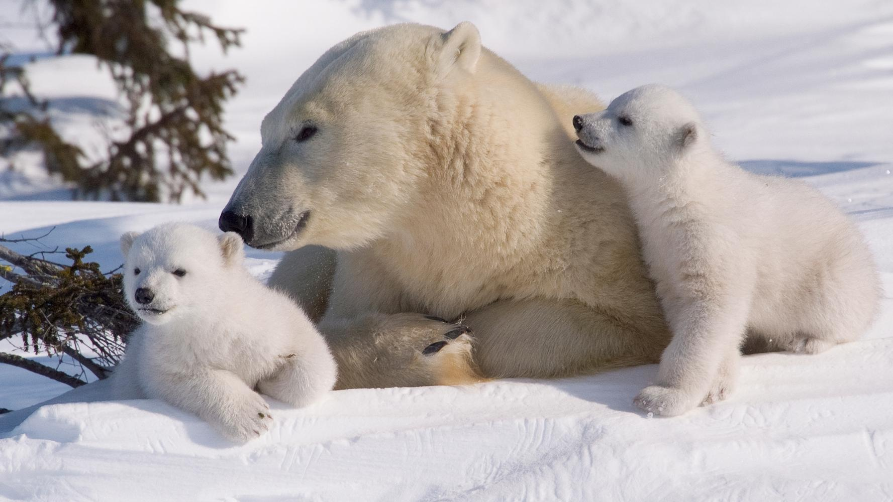
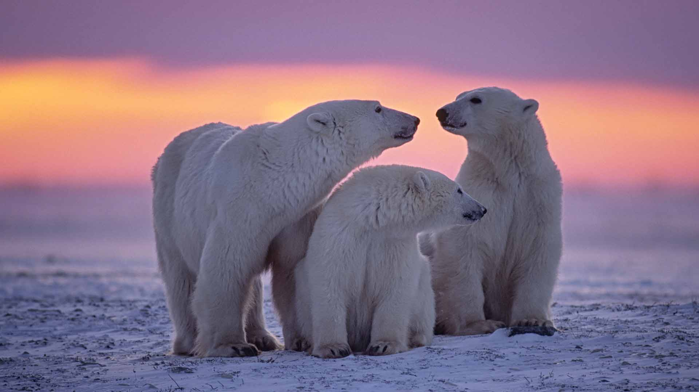
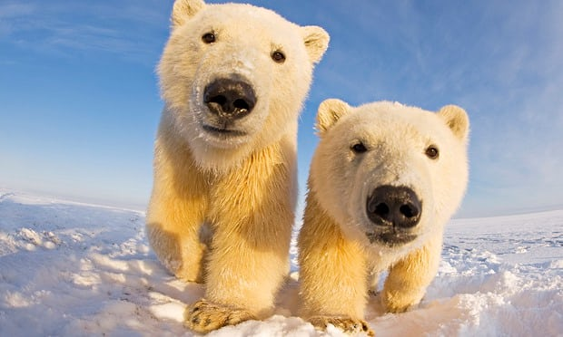

Polar Bears
All about polar bears
Here is some information on Polar bears! Their scientific name is Ursus Maritimus. Polar bears live in the Arctic. Because they are mammals and it is so cold in the arctic they have a coat of insulated fur surrounding a warming layer of fat. They are excellent swimmers because their front paws are slightly webbed. Their main prey is seals. Females generally give birth in winter. Most females give birth to twins. Their average lifespan is 25-30 years.
Conservation
There are many ways in which polar bears are being conserved. The first way is through different acts. Acts include The International Agreement on Conservation of Polar Bears and Their Habitat, United States Marine Mammal Protection Act, and The Endangered Species Act. Many different organizations are helping to conserve polar bears including The World Conservation Union, Polar Bears International, and World Wildlife Fund.
    